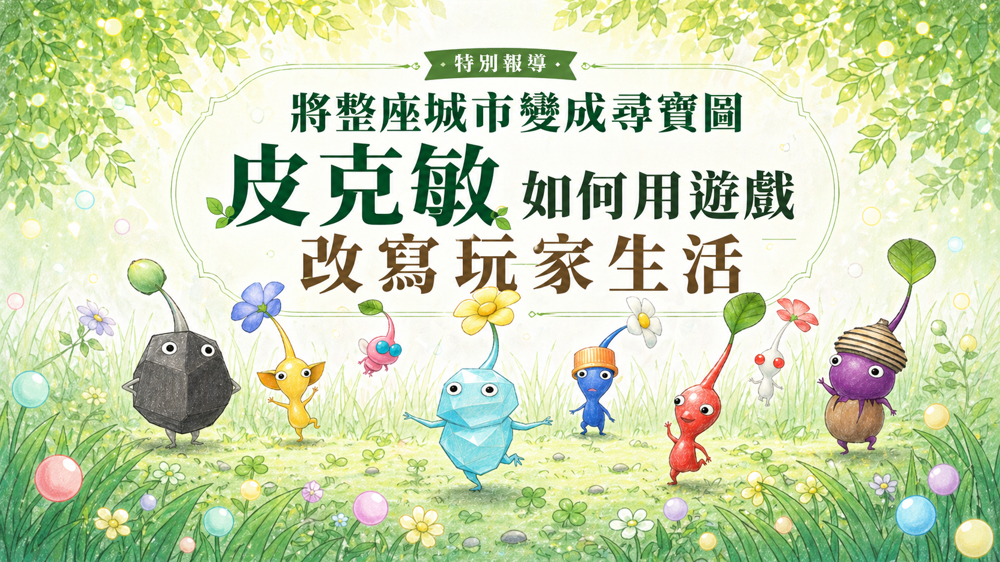
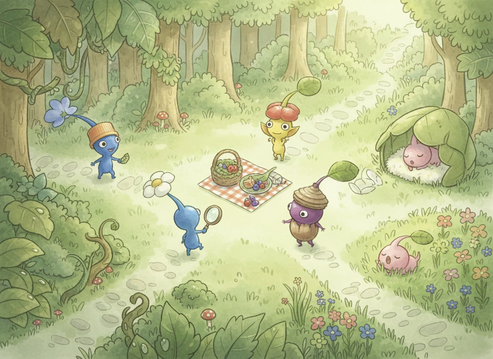
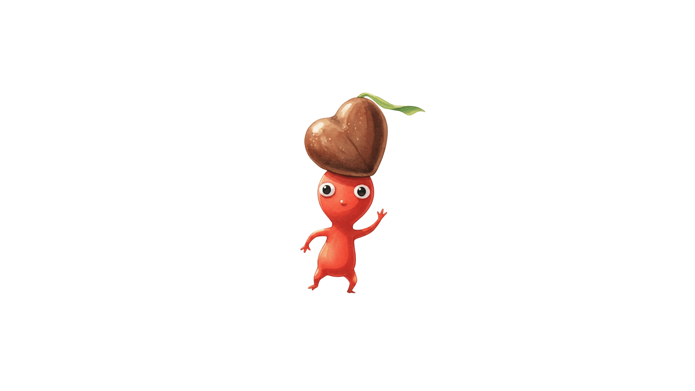

辛苦了！今天走了ＸＸＸ步
在睡覺前，先來跟皮克敏們回顧今天吧。
深夜裡，手機螢幕跳出這則提醒。對許多玩家而言，這不只是遊戲系統的例行通知，更像是替疲憊一天收尾的固定儀式。原本單調的返家路，因為想多種幾朵花而有了繞遠路回家的理由；過往枯燥的街頭，變成了玩家鑽研探測器位置的「尋寶圖」。在這股熱潮背後，玩家們開始發現，自己看待城市和生活的方式，竟在不知不覺中被這群彩色小生物重新改寫。
從一則睡前通知開始，跟著你的皮克敏走進這個改寫日常的走路遊戲世界。

從日常習慣、壓力反應、在人群中的位置，
測出你最像哪一隻皮克敏。
依整體傾向加權判定，讓結果更像真正的你。
題目敘述


深夜裡，手機螢幕跳出這則提醒。對許多玩家而言，這不只是遊戲系統的例行通知，更像是替疲憊一天收尾的固定儀式。原本單調的返家路，因為想多種幾朵花而有了繞遠路回家的理由；過往枯燥的街頭，變成了玩家鑽研探測器位置的「尋寶圖」。在這股熱潮背後，玩家們開始發現，自己看待城市和生活的方式，竟在不知不覺中被這群彩色小生物重新改寫。
由任天堂與《Pokémon GO》開發商 Niantic 合作開發的《皮克敏 Bloom》（簡稱皮克敏），其實早在 2021 年便已上線。在台上線四年多後，卻在近幾個月突然翻紅，不僅在今年二月問鼎 App Store 免費遊戲排行榜冠軍，更在社群媒體上迅速擴張「皮友」（註一）社群。無論是玩家們在 Threads 上分享自己獲得的特殊飾品、明信片，還是規模達 15 萬人的臉書社團，都顯示皮克敏正在快速擴張版圖。
註一：皮友，皮克敏遊戲玩家。
不同於多數需要長時間專注與操作的手遊，皮克敏將遊戲任務拆解進玩家日常行動中——走路。玩家藉由累積步數培育新的皮克敏，同時還要餵食皮克敏不同花朵的精華，才能蒐集相應的花瓣；接著透過移動灑下花瓣，累積獎勵賺取金幣和花苗。此外，還可以與其他玩家合作摧毀蘑菇，藉此蒐集更多道具、明信片來推進遊戲進度。
點選玩法卡，看看每個機制如何從遊戲任務延伸到玩家生活。
通勤、散步、繞路都會被轉換成遊戲進度，讓原本普通的移動變成可以被累積的成果。
它如何影響玩家生活：玩家更容易為了完成步數或活動任務，主動改變路線。
如果說「走路」是讓玩家打開遊戲的理由，那充滿未知的「飾品造型」才是讓玩家深陷遊戲的關鍵。皮克敏會根據取得地點戴上相應的飾品，例如漢堡店紙盒、車站票券，以及每月活動跟節慶限定造型，這些都是玩家熱衷蒐集的目標。對玩家而言，這不只是單純的數值累積，更像是一種「抽盲盒」的過程。
同樣使用定位，Ingress、Pokémon GO 與 Pikmin Bloom 帶給玩家的身體經驗並不相同。
而提到「走路」遊戲，許多人腦中浮現的或許是 2016年席捲全球的《Pokémon GO》（簡稱寶可夢），因結合經典「神奇寶貝」IP 與 AR 擴增實境技術，讓玩家得以在真實街道中捕捉虛擬怪獸，當時台灣也隨處可見「抓寶」（註二）的民眾。然而，同樣是強調「走路」的任天堂作品，皮克敏的玩法卻大不相同。身為兩款遊戲的資深玩家陳冠賓分享，寶可夢需要玩家隨時盯著螢幕捕捉精靈，他甚至在高二時因過度投入而不慎發生車禍。「玩寶可夢只是從在室內看手機，變成在室外看手機。」陳冠賓對比道，皮克敏只需要紀錄步數便可以獲得獎勵，更適合想從事戶外活動的人。
註二：抓寶，在遊戲中利用精靈球捕捉野生寶可夢。
正因為皮克敏不需要高強度的操作，還能自然融入日常生活，讓這款遊戲不再只是短暫的娛樂，而演變成一種生活習慣。目前就讀於天主教輔仁大學，遊玩經歷約一年的張馨予，在皮克敏上投入了大量時間。翻開他的手機使用時間，除了通訊軟體外，皮克敏長期佔據榜首。張馨予坦言，自己的日常生活已在不知不覺中與遊戲融合，例如他會為了每月推出的活動任務，設定嚴格的進度表，並要求在每月 15 日前完成活動任務。
當皮克敏從個人的日常習慣，進一步在社群平台上形成集體共鳴時，這款遊戲便不再只是小眾遊戲，而是正式走向大眾視野，並在今年迎來爆發式的成長。
2025 年 11 月，皮克敏迎來四週年活動，數據表現卻跌破眾人眼鏡：單月新增下載量高達 66.7 萬次。這份成績單不僅創下上市首月後的歷史新高，更讓這款手遊在台灣街頭「遍地開花」。究竟這股皮克敏熱潮是從何而起？
「我認為是行銷策略的成功促使皮克敏在台灣爆紅。」遊戲產業評論觀察家吹著魔笛的浮士德（化名）分析道。根據他的觀察，皮克敏在 2025 年 8 月以前下載排名約落在百名左右，直到與高雄合作舉辦活動後，排名逐漸上升，社群平台上的討論也開始增加。但真正引爆大眾好奇心的轉捩點，是喜劇演員樂咖在 Instagram 上發布皮克敏重度玩家的影片，該影片收穫超過 300 萬次播放，讓皮克敏在當日瞬間衝進下載榜前 50 名。
當越來越多玩家在社群上分享皮克敏的資訊時，便容易吸引更多民眾下載。玩家木星小傘（化名）表示，自己就是因為在 Threads 上看到「有人派皮克敏出國拿禮物要 100 天」的串文，才對遊戲產生興趣並入坑。後來，木星小傘也透過插畫記錄遊戲過程，並分享攻略給更多玩家。這種由玩家自發產出的內容，讓皮克敏的討論不斷在社群中擴散。吹著魔笛的浮士德推測，任天堂精準利用演算法推波助瀾，讓皮克敏不斷出現在大眾視野，維持遊戲討論熱度。
點擊時間線節點，查看每個事件如何推動熱度擴散。
除了社群推力，皮克敏本身低壓、可愛且貼近日常的遊戲設計，也是吸引玩家持續留下的原因。就讀國立台灣師範大學的黃奕晨表示，自己一開始是因為想與身邊朋友有共同話題，但後來發現皮克敏最吸引人的，是玩家可以自由決定遊玩時間。黃奕晨說：「我在玩皮克敏時不會被遊戲綁住，而且過程中不會有廣告干擾，更是吸引我一直玩下去的原因。」
而對喜歡記錄生活的玩家而言，皮克敏提供了一種新的日常紀錄方式。遊戲中的「每日回顧」功能，會在每晚統整玩家當日步數、移動軌跡、種花成果與當日心情，並建立在生活記錄中加入照片的功能，替玩家的一天留下簡短生活日誌。資深玩家盧莉恩也分享說：「當初會開始玩這個遊戲，是因為我去年到日本交換，想要記錄自己去過哪些地方，而皮克敏能記錄我當天所拍下的照片。」

對玩家而言，每日回顧不只是遊戲結算畫面，而是把步數、路線、照片與心情整理成一份可回看的生活紀錄。
對此，吹著魔笛的浮士德指出，皮克敏與傳統 LBS 遊戲（註三）的關鍵差異，在於其促進了跨越國界與地域的文化互換。各地區審美的異質性誘發全球用戶跨域交流，例如在台灣司空見慣的變電箱，在日本玩家眼中卻成了充滿異國情調的風景。像玩家小周，他便曾為了特定縣市的美景明信片，在週末展開一場說走就走的蒐集之旅。吹著魔笛的浮士德說：「這就是走路遊戲有趣的地方，它會帶你去可能這輩子都不會走進的巷子，帶領用戶發現世界可愛、有趣的角落。」
註三：LBS遊戲，Location-Based Service，適地性服務遊戲，為結合 GPS 定位與現實地圖的虛擬遊戲。
把受訪者經驗整理成三個主題，看看 Pikmin Bloom 如何從遊戲延伸到日常生活。
當玩家真正投入到遊戲中，皮克敏帶來的影響便不再只是「玩遊戲」本身，更逐漸滲透進生活習慣，例如鍾佳俊會為了達成每日任務指標，刻意增加日常步行的里程；木星小傘也發覺，自己每日行走的步數相較以往平均增加約 2000 步。張馨予也分享，為了提升遊戲進度，他學會騎腳踏車的技能，「騎腳踏車種花速度會變快！」此外，平常會選擇搭乘計程車的他，如今會為了累積種花所規定的步數，選擇步行或騎車。呈現日常行動與遊戲緊密結合的現象。
隨著皮克敏深入玩家的日常，那些原本在捷運上、公車站牌前等待的通勤空檔，開始被遊戲填滿。對此，國立政治大學傳播學院特聘教授林日璇表示，手機遊戲本身的定位，即是以填補零碎時間為主，屬於短時間的娛樂。「與其說是影響生活，不如說是增加玩家日常行動的動機。」林日璇指出，遊戲中的回饋機制，例如行走過程中開啟「種花」功能並獲得金幣，會促使玩家以步行取代其他交通方式。透過這類即時且具體的回饋設計，玩家在無形中強化行動動機，使原本平凡的移動過程轉化為具有目標與回報的行為。
儘管皮克敏產生了不少正面影響，卻也在無形中對玩家的日常生活產生制約，甚至牽動情緒。張馨予表示，由於「種花」十分耗電，若當日忘記攜帶行動電源，他便會感到非常自責，「這代表今天能種花的時間有限。」他表示，當遊戲進度受到影響時，會讓他感到懊惱與焦慮。對此，林日璇補充，遊戲是否對玩家產生負面影響，關鍵取決於個人的使用程度與投入狀態。以皮克敏這類較為輕鬆的遊戲而言，其核心機制建立在日常行走之上，整體對生活造成失衡的情形相對有限。
點擊四個面向，查看受訪者例子與報導觀察。
玩家可能選擇多走路、改變路線，甚至學習騎車提升效率。
受訪者例子：鍾佳俊會為了達成每日任務指標，刻意增加日常步行里程；木星小傘也發現每日步數比以前平均增加約 2000 步。
影響說明：遊戲把「多走一點」轉化為任務進度，讓玩家願意改變原本的移動選擇。
報導觀察：當路線開始被任務牽動，城市就不再只是通勤背景，而成為遊戲地圖。
每日任務與活動任務讓玩家開始安排進度。
受訪者例子：張馨予會為每月活動任務設定進度表，希望在每月 15 日前完成任務。
影響說明：遊戲任務讓玩家把活動期限、每日目標與行動安排放進生活規劃。
報導觀察：遊戲不只填補零碎時間，也開始重新安排玩家的日常節奏。
任務受阻、資源不足或錯過進度時，遊戲也可能帶來焦慮。
受訪者例子：張馨予提到，如果忘記帶行動電源，會因為種花時間受限而感到自責與焦慮。
影響說明：當任務進度與資源消耗綁在一起，遊戲回饋也可能轉化為壓力來源。
報導觀察：低壓遊戲並不代表完全沒有制約，關鍵在於玩家投入程度與自我界線。
打蘑菇、明信片交換與 Party Walk 成為低負擔的人際連結方式。
受訪者例子：陳冠賓認為交換明信片逐漸成為日常問候；鍾佳俊則會透過打蘑菇邀請維繫跨城市友誼。
影響說明：明信片、打蘑菇與 Party Walk 讓玩家用低負擔方式維持互動。
報導觀察：皮克敏的社交不是強迫聊天，而是讓共同任務成為新的關係媒介。
皮克敏不只重塑個人的生活節奏，更在無形中拉近人與人間的距離。例如不少玩家會在他人分享的海外明信片貼文下方留言，表示希望能共同參與打蘑菇取得戰鬥獎勵，進而蒐集不同地區的明信片。這樣的互動模式，使遊戲內容延伸至社群平台，進一步強化玩家之間的連結。
「我覺得很多人是為了社群接觸皮克敏，也為了跟朋友交換明信片。」2025 年暑假投入皮克敏的玩家陳冠賓指出，皮克敏「交換明信片」逐漸成為一種日常問候方式，拉近了玩家之間的距離，更顯示這股橫掃社群的風潮核心在於渴望具備共鳴的社交連結。他分享，他與友人時常相約騎車漫遊社區，一起開啟種花功能，將原本僅限於螢幕中的散步遊戲，延伸至與同伴並肩同行的實體行動。同樣沉浸於遊戲的玩家鍾佳俊則分享，皮克敏在一定程度上消弭了地理隔閡。每當好友發出「打蘑菇」的邀請，他總會第一時間加入，這樣的互動不僅維繫了跨城市的友誼，也讓他在校園中結識更多志同道合的朋友。
對於這樣的社交影響，林日璇形容遊戲為一種「社交潤滑劑」，「即使不強調即時對話，透過共同任務等方式，仍能加強玩家之間的連結。」他表示，這類低負擔的互動形式，使遊戲成為人際關係中的另一種交流媒介。吹著魔笛的浮士德亦觀察到，皮克敏不僅促進玩家之間的互動，也對家人關係產生影響，長輩與在外發展的子女之間，不再僅止於關心近況，而是能透過打蘑菇或寄送明信片等方式，延伸互動與對話內容。
從通勤路上的一步一花，到與朋友家人共享的明信片互動，皮克敏重新定義我們觀看日常生活的視角。當這群小生物跳出螢幕，娛樂與生活的邊界隨之消融。皮克敏的火紅或許正說明，人們不再只是在生活中尋找娛樂，而是在娛樂之中，重新理解生活。